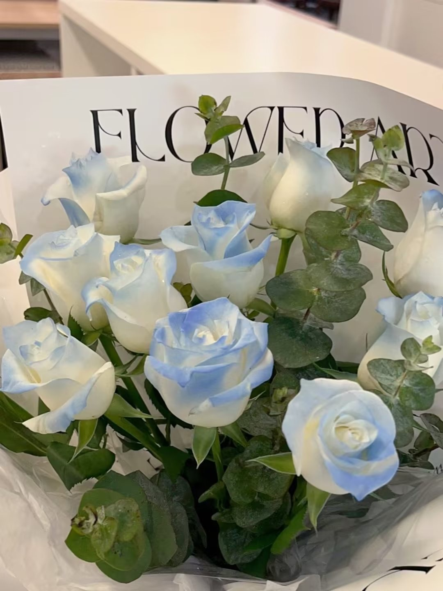
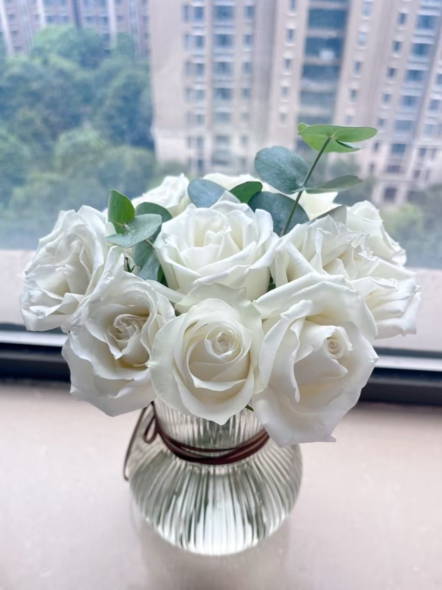
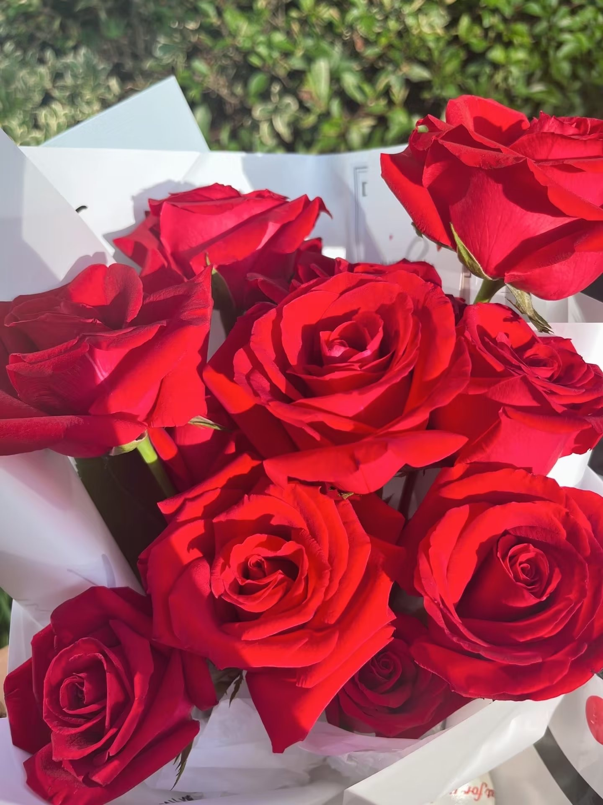
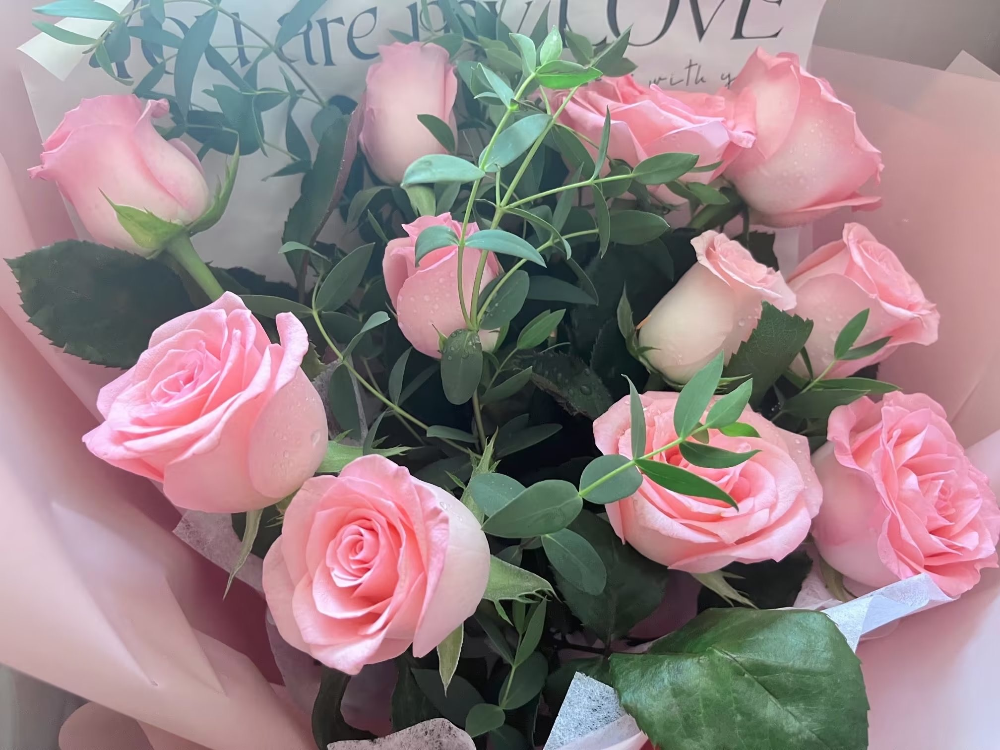
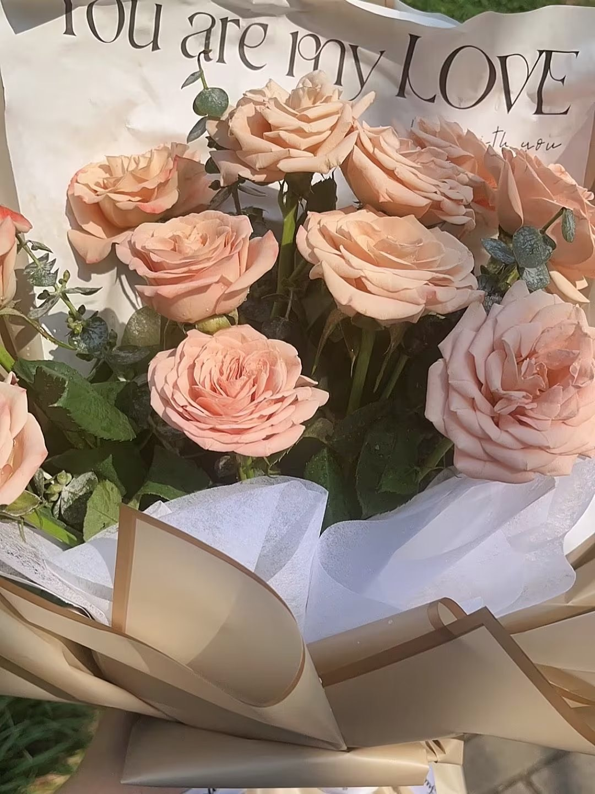
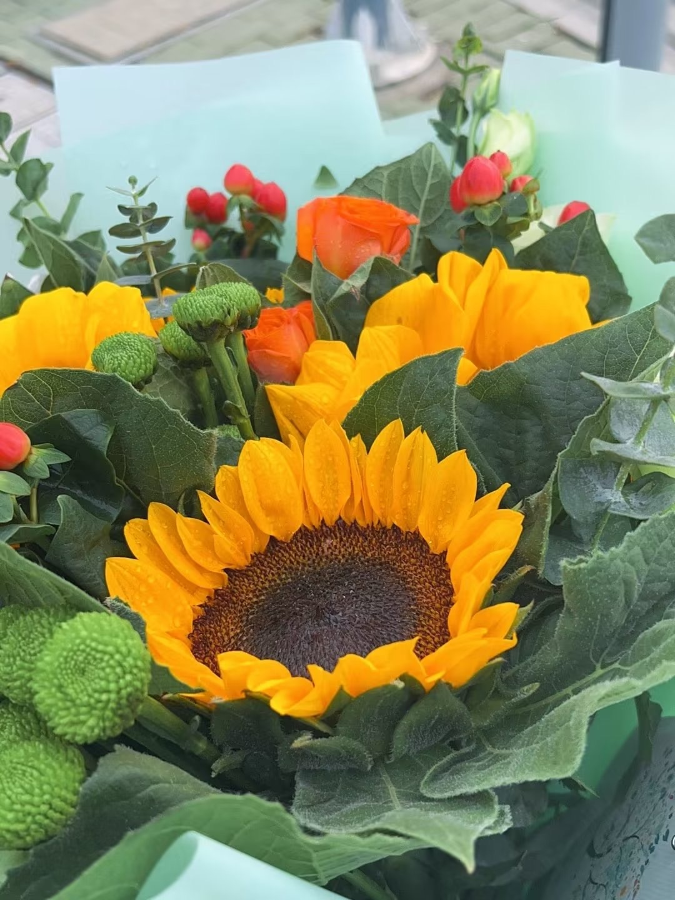

在这里记录我们的小作文和我们的花花～
(我猜你的同事们正在看，所以这是一个实时更新测试)
我超级爱你的 宝贝 你对我来说就是最好的唯一的宝贝 每次想到你嘴角都会上扬 大家都说我每天都在念叨你 很甜蜜的样子 我希望这个状态一直持续下去（异国除外） 一拿起手机就想给你发消息 宝贝我半夜醒了 呜呜 我要继续睡了 晚安宝贝老公！
老婆，我真的好爱你。我想上天创造了我们两个人，让我们在截然不同的环境中成长却奔赴向了相同的三观与思维，这更加证明了我们这注定存在的缘分吧。我想牢牢把握住这个缘分，我确信你将是我永远会去也是唯一会去爱的那个女孩儿。宝贝，你我之间要跨越南海，翻过南岭，再穿越半个中国。杞人忧天地思考未来，我不知道会沧海桑田还是山海依旧；现实焦虑地看着眼前，我不知道南海的那艘美国航母会驶向何处战争是否回到来。但这些又有什么重要的呢，我不觉得任何事情能阻碍我对你的爱。我真的真的很想，也一定要，和你共度余生。我期盼，也坚信，我们将拥有永远的幸福。
宝贝，我爱你。没有在你身边，或许我不能每天创造一些惊喜，不能给你能够切身感受的关怀。但我会去努力的，去探索创造出一些异地能实现的方式。宝贝你要相信我，等我们不异地的时候，我对你的好一定会胜过任何人。遇见你是我一生最大的惊喜，我想把这份惊喜永远保留在我的人生中。我对你的好，这不仅会是嘘寒问暖，还会是一个美好的未来。我们的思维是如此相像，这使得我会尊重并认可你的每一个选择，不管是坚持一份好的工作，亦或是离开一个不适的环境，还是永远不要小孩儿。我想要去实现你的每一个梦想，不管是一段美好的婚姻，开一个花店，还是永远快乐地过完一生。我希望我们得爱和我对你的好不仅是最强烈的，也会是最深的，更会是最久的。宝贝，我爱你。
老婆我真的超级超级爱你，我从来没有想过会要去和一个人结婚，但和你，我想立马告诉我的父母和我身边所有的人，我要和你结婚，我只和你结婚，我要马上和你结婚。接下来几天我可能会有点忙啦，但我一定要每天都留出时间和你在一起的。我真的爱你，是那种从没有过的，也永不会改变的感觉。
碎冰蓝玫瑰的花语是：在爱你的每一天里，送给你的希望是星辰大海。
白玫瑰的花语是：纯洁、高贵与天真的爱。
以前总告诉自己虽然很想得偿所愿 但也要做好准备去面对未能如愿以偿的落差感 唯独跟你结婚这件事我没有这样想 因为我实在想象不到 如果没有你 我该如何独自面对这后面漫长的岁月
结婚的冲动我只留给了你一个人，好想向别人介绍你是我的妻子而不只是女朋友。我相信我们一定会是身边所有情侣与夫妻中，最幸福最恩爱最美好的那一对。我爱你，从今往后，不会更改。
红玫瑰的花语是：热恋、热情、热爱着你。
我好想你占据我的一切，占据我的梦境，占据我的现实，占据我的一切现在，也占据我的所有未来。我有时候在想，是不是上帝失手让宇宙这个复杂的系统出了一点bug，于是在两个平行宇宙中的同一个人，出现在了一个世界中，成为了豆和耘，他们相遇相爱还要结婚。但上帝应该是一个天才工程师吧，这亿亿分之一的出错概率能让我们碰到，也是我们存活在这个宇宙中最最幸运的意义了。你我的存在与相爱就是幸运与幸福本身，是无限的，是永恒的。
粉玫瑰的花语是：特别的关怀，喜欢你那灿烂的微笑。
能和你相爱是我人生最大的幸运，你是我一生只会遇见一次的惊喜。我是一个贪心的人，不想只是和你牵手，和你拥抱，和你睡觉，我想和你结婚，和你共度余生。我好憧憬和你领证的那一天，我们要在新加坡领证，也要在中国领证，让每一处我们待过的地方，都知晓你我的名分。我爱你。
我也好爱你！我以为我遇不到这样完美又恰到好处的人了 甚至都想摆烂了 结果就碰到你了 看来我确实命很好 算命先生诚不欺我 以前我从没想过要谈异地恋更别提异国恋了 但是遇到了你 我就把所有其他可能性都划了叉 我觉得我们可以打破所有其他人对婚姻的看法 真的可以不虚此生 每天都过得没有开心且没有遗憾 我希望你也是如此 在家里就要做真实的自己嘛 糟了要开始培训了 爱你 老公！。
老婆，我真的好爱你，我从来没想过能碰到一个这么完美的，我爱的，她也爱我的女孩子。你是我字典里所有褒义词的总和，我真的好幸运。你刚刚问我有没有更喜欢你了，我想最爱你的日子永远是今天，更爱你的日子永远是明天。我想攒下所有梦见你的瞬间，跨过南海，从南洋到江南，去见你，去拥抱你。
香槟玫瑰的花语是：爱上你是我今生最大的幸福，和你在一起是我的骄傲。
向日葵见证了我们的友谊，爱情前的友谊也是那么的美好。
